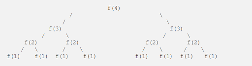

Nuli Swathi
Undergraduate / Full Stack Developer
Math & Science Tutor / Blogger

How to calculate Time Complexity
Time complexity of an algorithm is basically the time taken to run it. It is calculated by taking into account all the operations that the algorithm runs. It is important to know how to calculate time comp for programming interviews because most interviewers ask you to provide time and space complexity for algorithms.
Check out my blog for How to calculate space complexity hereBig O notation is used to describe the time complexity of an algorithm. Let's pick a few examples to understand how to calculate time complexity.
Example 1 :
public void printArray(int[] arr) {
for(int i = 0; i < arr.length; i++) {
sout(arr[i]);
}
}
The function in the above example prints all the elements in the array to the console. It is doing so by iterating through all the elements in the array. The for loop in the above function runs 'N' times, where 'N' is the size of the array. So the time complexity for the above function is O(N).
Drop the constants :While calculating time complexity we lose the constants. Let's take a look at the below example to understand this better :
Example 2 :
public void printArrayTwice(int[] arr) {
for(int i = 0; i < arr.length; i++) {
sout(arr[i]);
}
for(int j = 0; j < arr.length; j++) {
sout(arr[j]);
}
}
As you can see in the above function, we iterate through the array two times. Each time we iterate through the array the time complexity is O(N), since we are iterating twice it is : O(N) + O(N) = O(2N). Here the constant is 2. We drop the constants in run time, so the time complexity for the above function will still be O(N).
Multiply the runtimes :Example 3 :
public void nestedForLoop(int[] arr) {
for(int i = 0; i < arr.length; i++) {
for(int j = 0; j < arr.length; j++) {
sout(arr[i] + arr[j]);
}
}
}
}
In the above example for each iteration in the outer for loop, we iterate through the entire array in the inner for loop. So the time complexity for the above function is O(N * N) = O(N^2). For the above N = 3(sizeof the array), so the time complexity of O(3^2) = O(9).
Drop the Non-Dominant terms :You should drop the non-dominant terms while measuring time complexity.
Example 4 :Logarithmic Runtime :O(N^2 + N) = O(N^2) Here we dropped O(N) which is the non-dominant term.
O(N + logN) = O(N) Here we dropped O(logN) which is the non-dominant term.
The most common logarithmic runtime we come across is O(logN). If an algorithm works in such a way that the number of elements it needs to process or work through gets halved every time, then the time complexity for such an algorithm is O(logN).
The time complexity for finding an element in a balanced BST is O(logN), since we reduce the number of elements we need to look up everytime by half.
Recursive Runtime :
I was very confused about calculating time complexity for recursive algorithms when I started problem solving. Hopefully the below example helps you understand this.
Example 5 :In a nutshell the time complexity for a recursive algorithm will often look like O(branches ^ depth).
int f (int n) { if ( n ≤ 1) { return 1; } return f(n-1) + f(n-1) }
To find time complexity, let’s see how many calls this algorithm will make for some value n, say 4

If we see the number of calls is actually a binary tree with depth 4 and number of calls in each tree level is twice as the previous level.
So for n, the number of calls will be a binary search tree of depth n with each level having 2^i elements, where i is the level in the tree. If we add all calls, the number of calls will be 2⁰ + 2¹ + 2² + 2³ + … + 2^n which is equal to O(2^n).
So the time complexity is o(2^n).